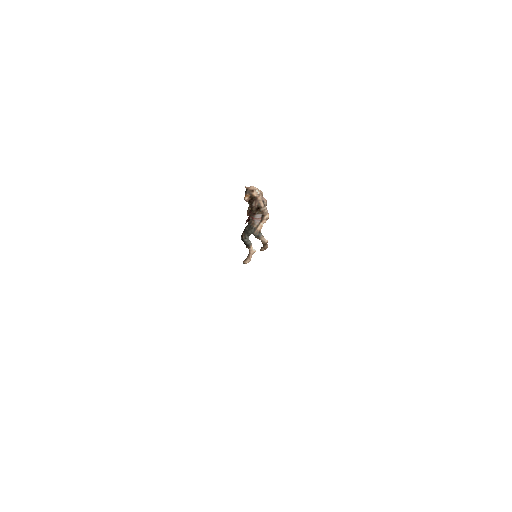
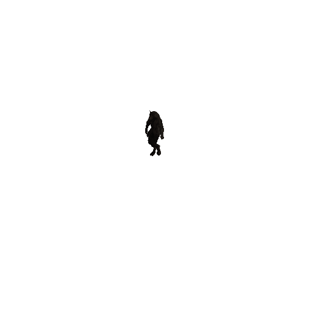
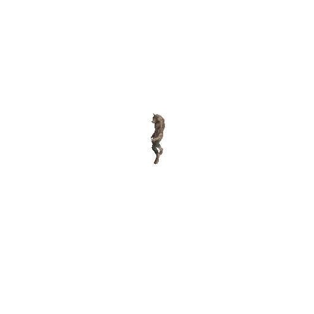

Loup-garou
λυκάνθρωπος
Une créature de jeu vidéo, mi-homme, mi-loup.



La créature possède une tête de loup aux oreilles dressées et un corps d'homme voûté, couvert d'un pelage brun fauve. Elle est vêtue d'un pantalon en lambeaux et d'une ceinture. Voici trois planches : une pose de repos, une marche et une attaque.
Fiche
- Nom
- Loup-garou
- Nature
- Homme changé en loup
- Pelage
- Brun fauve
- Tenue
- Pantalon en lambeaux, ceinture
- Apparition
- La nuit, dans les campagnes
- Animations
- Repos, marche et attaque
Origine
Le loup-garou est un homme que le sort change en loup, le plus souvent la nuit. Son nom parle deux fois du loup : « garou » vient d'un mot francique qui signifiait déjà « homme-loup ».
Le grec ancien l'appelait λυκάνθρωπος, de lukos, « loup », et anthrôpos, « homme ». Au douzième siècle, Marie de France en fait le héros de son lai Bisclavret : un baron breton dont la femme lui fait voler ses vêtements pour qu'il reste loup.
Au Québec, la légende veut que celui qui manque à ses devoirs religieux, en évitant la confession de Pâques, soit ensorcelé et rôde chaque nuit sous cette forme. Le sort ne se rompt que si quelqu'un le reconnaît et lui fait couler un peu de sang.